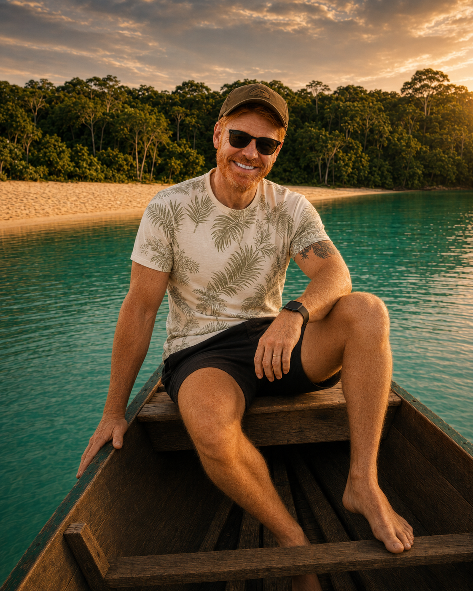
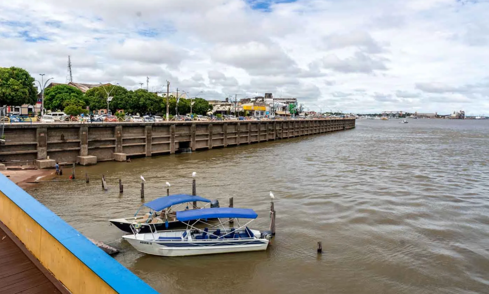
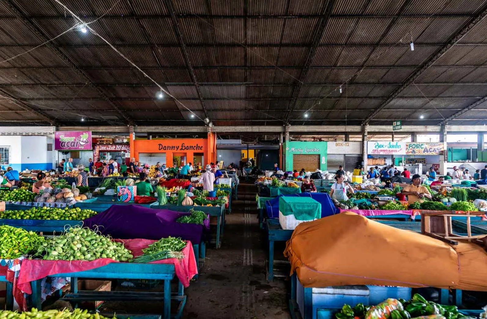
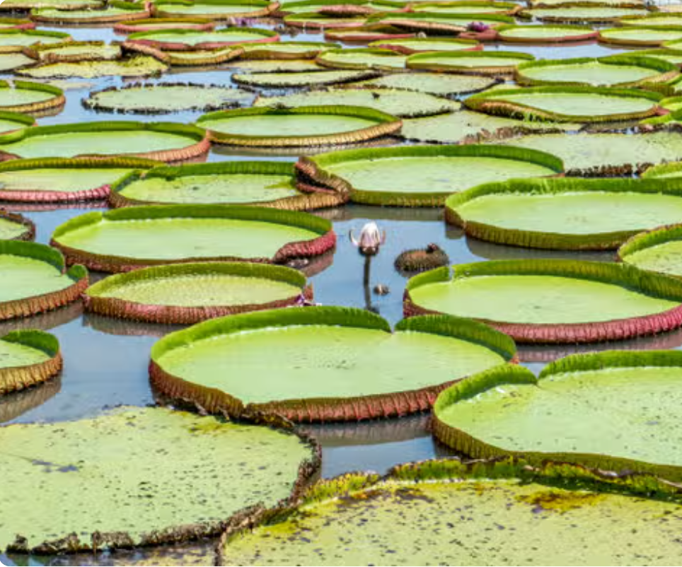
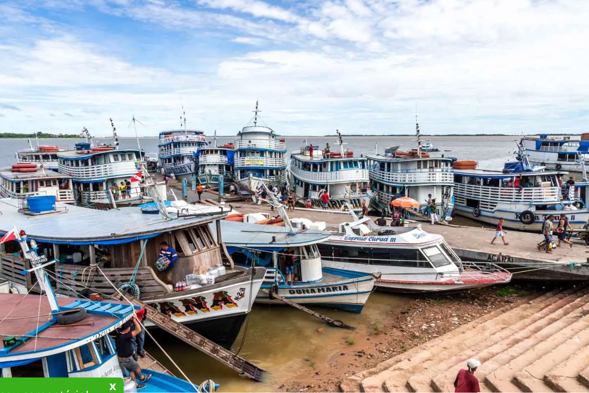
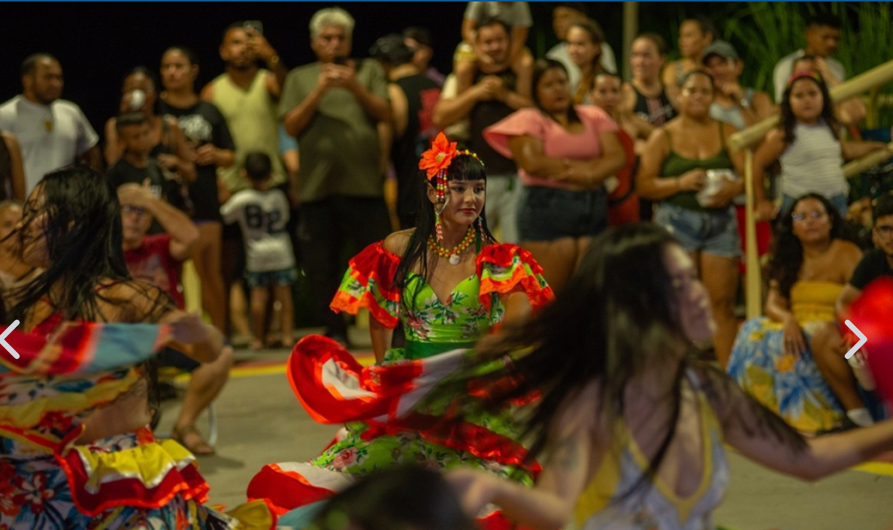

Ríos
Navegar forma parte de la experiencia
El barco no es solo transporte. Es la forma de percibir escala, distancia, viento y cambio de paisaje.
Playas de agua dulce, bancos de arena que aparecen con la bajante, bosque en el horizonte y una cultura que no funciona como decorado, sino como presencia. Esta página reúne información, itinerario y pasos prácticos para convertir el deseo en un viaje real.
Alter do Chão está en el municipio de Santarém, a orillas del Tapajós. Pero la geografía explica poco. La experiencia se define por la combinación de agua, bosque, arena, traslados en barco, comunidades y el tiempo del río.
No es un viaje para coleccionar lugares deprisa. Es un viaje de travesías, playas, conversaciones, comida regional, silencio y atardeceres que cambian de color sin pedir permiso.

Ilha do Amor es el nombre del banco de arena frente al pueblo. La travesía es corta, pero el paisaje cambia con el nivel del río, y esa variación forma parte de la identidad del destino.
El nivel de los ríos define el paisaje. En lugar de buscar una respuesta rígida, conviene entender qué ofrece cada periodo y confirmar las condiciones cerca del viaje.
En el segundo semestre, los bancos de arena suelen ganar protagonismo. La intensidad y el calendario varían cada año.
Con aguas más altas, cambia la lectura del destino: cobran fuerza la navegación y el paisaje de bosque inundado.
Es el tiempo que permite combinar pueblo, playas, ríos y experiencias culturales sin convertirlo todo en una carrera.
Alojarse en el pueblo facilita los atardeceres, la travesía a Ilha do Amor y la sensación de vivir el destino por completo.
La fuerza del destino aparece cuando el itinerario combina paisaje, movimiento, cultura y tiempo libre.
El barco no es solo transporte. Es la forma de percibir escala, distancia, viento y cambio de paisaje.
Prioriza experiencias guiadas por residentes, guías y comunidades que conocen el ritmo local.
Reserva tiempo para no hacer nada más que observar cómo cambia la luz sobre el río.
Una estructura equilibrada para un primer viaje. Los paseos y el orden deben adaptarse al nivel del río, al clima y a la operación local.
Traslado desde Santarém, check-in, paseo por la costanera y primer atardecer sin prisas.
Travesía corta, mañana de playa y tarde libre para sentir el pueblo sin reloj.
Excursión de día completo con playas, paradas para nadar y lectura del paisaje desde el río.
Experiencia cultural o comunitaria, contratada de forma responsable y con tiempo para escuchar.
Mañana libre, almuerzo tranquilo y regreso a Santarém según el horario del vuelo.
Como la entrada y salida de Alter do Chão pasan por Santarém, conviene reservar uno o dos días para conocer la ciudad, caminar por la costanera, visitar el centro histórico y disfrutar de la gastronomía amazónica con calma.

Si el vuelo llega temprano, vale la pena dormir una noche en Santarém antes de seguir a Alter. En el regreso, la ciudad funciona muy bien como cierre relajado, con paseo por la costanera, almuerzo tranquilo, mercado y atardecer.
Con poco tiempo, la mejor combinación es costanera, centro histórico y un atardecer sin prisa. Con dos días, añade mercado, paseo urbano y una parada cultural o gastronómica.

Antes de llegar a Alter, Santarém ya ofrece una excelente introducción a los sabores amazónicos. Mercados, buffets y restaurantes permiten experimentar la abundancia local con más contexto y menos prisa.
Santarém no es solo un punto de paso. La ciudad introduce al visitante en una estética amazónica propia, con ríos amplios, victorias regias, encuentro de aguas y una relación directa entre vida urbana y naturaleza.


El aeropuerto de Santarém (STM) es la puerta de entrada más práctica a Alter do Chão. Desde allí, el trayecto de unos 35 km por carretera tarda entre 40 y 60 minutos.
Cuando haya agenda cultural, vale la pena incluir una presentación, evento o manifestación local. Incluso sin programación, la forma en que Santarém ocupa calles, plazas y costanera revela el espíritu de la ciudad.

Vuelos y alojamiento merecen antelación. Los paseos deben elegirse con operadores locales confiables y confirmarse según las condiciones del río.
Compara rutas, escalas y horarios pensando también en el traslado a Alter do Chão.
Buscar vuelosPara un primer viaje, prioriza ubicación, acceso a la costanera y facilidad de desplazamiento.
Buscar hotelesUsa plataformas para comparar opciones, pero valora operadores y guías con presencia real en el destino.
Ver experienciasIncluso en un viaje nacional, la cobertura para emergencias e imprevistos puede simplificar decisiones.
Ver seguroDeja tus datos para recibir la versión actualizada cuando esté lista, organizada por días, con una lista de verificación y enlaces útiles.
Sin exceso de mensajes. Solo contenido útil de Lipe Travel Show.
Muy pronto, nuevos videos, relatos y un itinerario aún más completo en Lipe Travel Show.
Seguir la serie